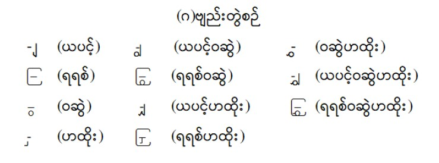

| က | ဋ | ဖ |
| ခ | ဌ | ဗ |
| ဂ | ဍ | ဘ |
| ဃ | ဎ | မ |
| င | ဏ | ယ |
| စ | တ | ရ |
| ဆ | ထ | လ |
| ဇ | ဒ | ဝ |
| ဈ | ဓ | သ |
| (ဉ) | န | ဟ |
| ည | ပ | ဠ |
| အ |
| က | ဋ | ဖ |
| ခ | ဌ | ဗ |
| ဂ | ဍ | ဘ |
| ဃ | ဎ | မ |
| င | ဏ | ယ |
| စ | တ | ရ |
| ဆ | ထ | လ |
| ဇ | ဒ | ဝ |
| ဈ | ဓ | သ |
| (ဉ) | န | ဟ |
| ည | ပ | ဠ |
| အ |
| အ | (အာ့း) | အီး |
| အာ | အိ/ဣ | (အီ့း) |
| (အာ့) | အီ/ဤ | အု/ဥ |
| အား | (အီ့) | အူ/ဦ |
| (အူ့) | အင် | အည်း |
| အူး/ဦး | အင့် | ဧည့် |
| (အူး) | အင်း | (အဋ်) |
| အေ/ဧ | (အိင်) | (အိဋ်) |
| အေ့ | အောင် | (အုဋ်) |
| အေး | အောင့် | (အာဌ်) |
| အဲ | အောင်း | (အဏ်) |
| အဲ့ | အိုင် | (အိဏ်) |
| အော/ဩ | အိုင့် | (အုဏ်)/(ဥဏ်) |
| အော့ | အိုင်း | အတ် |
| အော်/ဩော် | အစ် | (အာတ်) |
| အံ | (အာစ်) | အိတ်/(ဣတ်) |
| အံ့ | (အိစ်) | အုတ်/(ဥတ်) |
| အို | (အုစ်)/(ဥစ်) | (အေတ်) |
| အို့ | (အဇ်) | (အဒ်) |
| အိုး | (အိဇ်) | (အာဒ်) |
| အက် | အဉ် | (အိဒ်)/(ဣဒ်) |
| (အိက်) | အဉ့် | (အုဒ်) |
| (အုက်)/(ဥက်) | အဉ်း | (အိုဒ်) |
| အောက် | (အာဉ်) | အန် |
| အိုက် | (အိဉ်) | အန့် |
| (အုခ်) | (အုဉ်း) | အန်း |
| (အဂ်) | (အေဉ်) | (အာန်) |
| (အိဂ်) | အည် | အိန်/(ဣန်) |
| (အုဂ်) | အည့် | အိန့် |
| အိန်း | အမ်း | (အေရ်) |
| အိန်း | အမ်း | (အေရ်) |
| အုန် | အိမ် | (အိုရ်) |
| အုန့် | အိမ့် | (အလ်) |
| အုန်း | အိမ်း | (အိလ်) |
| အပ် | အုမ်/(ဥမ်) | (အုလ်) |
| အိပ် | အုံ/(ဥုံ) | (အိုလ်) |
| အုပ်/(ဥပ်) | အုမ့် | (အသ်) |
| (အောပ်) | အုံ့ | (အာသ်) |
| (အဗ်) | အုမ်း | (အိသ်) |
| (အိဗ်) | အုံး | (အုသ်) |
| (အုဗ်) | အုမ်း | (အုသ်) |
| (အုဗ်) | အယ် | (အိုသ်) |
| (အာဘ်) | (အာယ်) | (အဟ်) |
| အမ် | (အိုယ်) | (အာဟ်) |
| အမ့် | (အာရ်) | (အိဟ်) |
| (အိုဟ်) | ||
| (အိုဠ်) |
မှတ်ချက်။ ၁။ ပါဌ်ဆင့်ပုဒ်များ၊ ကင်းစီးပုဒ်များကို ရိုးရိုး အသတ်ပါ ပုဒ်များနှင့် တစ်ပေါင်းတည်းစဉ်သည်။
၂။ ည ဗျည်း နှင့် ယျ ဗျည်းများကို အမြင်အတိုင်း စဉ်သည်။
၃။ အမြစ်ပါသော ပုဒ်တို့ကို အမြစ်မပါသောဆိုင်ရာ မူလပုဒ်နောက်မှ စဉ်သည်။
အာ၊ အာ့။ အား၊ အာ့း။
အီ၊ အီ့။ အီး၊ အီ့း။
အူ၊ အူ့။ အူး၊ အူ့း။
၄။ ဝိသဇ္ဇနီသံ ပါသည်ဖြစ်စေ၊ မပါသည်ဖြစ်စေ စာလုံးပေါင်း အတိုင်းစဉ်သည်။
ဧချင်း (အေအုပ်စု)
ဧရာဝတီ (အေအုပ်စု)
သင်္ခါရ (အင်အုပ်စု)
သင်္ဘော (အင်အုပ်စု)
မန္တရား (အန်အုပ်စု)
မန္တန် (အန်အုပ်စု)
၅။ ဣ၊ ဤ၊ ဥ၊ ဦ၊ ဦး၊ ဧ၊ သြ၊ ဪ အက္ခရာများကို အိ၊ အီ၊ အု၊ အူ၊ အူး၊ အေ၊ အော၊ အော်တို့နှင့် ကာရန်အလိုက် ရော၍ တစ်ပေါင်းတည်း စဉ်သည်။

၁။ ပုဒ်များကို မြန်မာစာအဖွဲ့က အတည်ပြုထားသည့် အက္ခရာစဉ် ဇယားအရ စဉ်ထားပါသည်။
၂။ ကြိယာပုဒ်တိုင်း၏နောက်တွင် “သည်” ဝိဘတ်ဖြင့် ပြလို သော်လည်း ကြိယာပုဒ်ပေါင်းများစွာ ပါဝင်နေပါ၍ “သည်” အစား “ - ” မျဉ်းတိုကို သုံးထားပါသည်။ ထို့ကြောင့် “ကခုန်-”ဟု တွေ့ရလျှင် “ကခုန်သည်”ဟု ဖတ်ရန်ဖြစ်ပါသည်။
၃။ အချို့သောပုဒ်များသည် ထပ်တူ အနက်အဓိပ္ပာယ်ကို သော်လည်းကောင်း၊ ဆက်စပ်မှုရှိသော အနက်အဓိပ္ပာယ်ကိုသော် လည်းကောင်း ဖော်ပြပါမှ ထင်သာမြင်သာရှိပါမည်။ ထို့ကြောင့် ယင်းပုဒ်မျိုး၏ နောက်တွင် သက်ဆိုင်ရာအဓိပ္ပာယ်ကို ကွင်းအတွင်း၌ ဖော်ပြထားပါသည်။ သာဓက။ ။ “တံတင်း (သေတ္တာ)”၊ “ဂဒူး (ဆောင်းစရာ)”၊ “ဒင်ဒင်( မြည်သံ)”
၄။ အချို့သောပုဒ်များသည် အခြားပုဒ်တစ်ခုခုနှင့် ဖြည့်စပ်၍ ဖော်ပြပါမှ ထင်သာမြင်သာရှိပါမည်။ ထို့ကြောင့် ယင်းပုဒ်မျိုး၏ နောက်တွင် မူလပုဒ်နှင့် ဖြည့်စပ်ပုဒ်တို့ကို ကွင်းအတွင်း၌ ဖော်ပြ ထားပါသည်။ မူလပုဒ်အစား “ ~ ” သင်္ကေတဖြင့်သာ ပြထားသဖြင့် “ကျည်းပေါင် (တံခါး~)” ဟု တွေ့ရလျှင် “ကျည်းပေါင်(တံခါးကျည်းပေါင်)” ဟူ၍လည်းကောင်း၊ “ ကတည်းက (သွား~) ” ဟုတွေ့ရလျှင် “ကတည်းက(သွားကတည်းက)” ဟူ၍လည်းကောင်း၊ “ကဲ့-(စပါး~-)” ဟုတွေ့လျှင် “ကဲ့သည်(စပါးကဲ့သည်)” ဟူ၍လည်းကောင်း ဖြည့်စွက် ဖတ်ရန်ဖြစ်ပါသည်။
၄။ အချို့သောပုဒ်များသည် ပညာရပ်ဆိုင်ရာ အသုံးအနှုန်း များဖြစ်သဖြင့် သက်ဆိုင်ရာပညာရပ်ကိုဖော်ပြပါမှ ထင်သာမြင်သာ ရှိပါမည်။ ထို့ကြောင့် ယင်းပုဒ်မျိုး၏နောက်တွင် ကွင်းအတွင်း၌ ပညာရပ်အမည်ကို ဖော်ပြထားပါသည်။ သာဓက။ ။“ကရိုဏ်း (သဒ္ဒါသုံး၊ ဗေဒင်သုံး)”၊ “ကျမ်းတုံး(လယ်ယာသုံး)”၊ “တိုးစီခုံး (ဗိသုကာသုံး)”